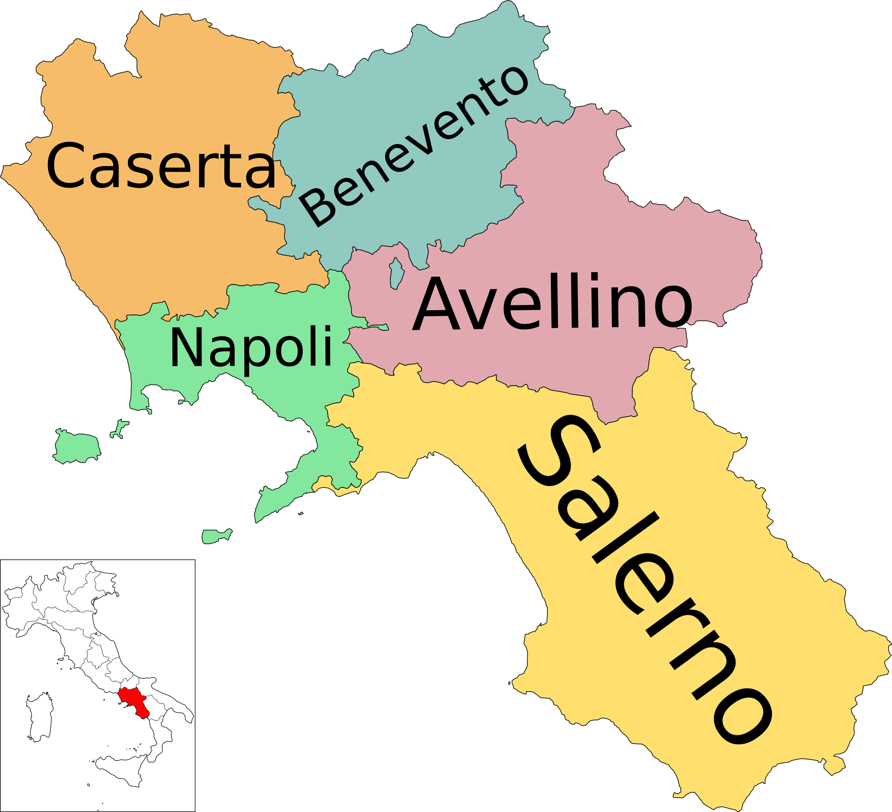

Recipe pizza!
Story of the pizza:
Who invented pizza? The official invention of pizza, prepared by the chef Raffaele Esposito in honor of Margherita di Savoia, the Queen of Italy, seems to date back to June 1889: it is no coincidence that the toppings used, tomato, mozzarella and basil, represent the colors of the Italian flag.
Plate region:
Campania
Recipe of pizza:
Ingredients:
| Ingrediente | Quantità |
|---|---|
| Farina Manitoba | 200 gr |
| Farina 00 | 300 gr |
| Lievito di birra | 4 gr |
| Sale fino | 10 gr |
Steps of recipe:
- Per preparare la pasta per la pizza abbiamo scelto di impastare il tutto a mano, ma se preferite utilizzare l’impastatrice potrete seguire lo stesso procedimento, utilizzando il gancio a velocità medio bassa. Come prima cosa versate le due farine in una ciotola , sbriciolate il lievito all'interno e versate un po' della dose di acqua . La temperatura ideale dell'acqua è di 25°.
- Mescolate con un mestolo di legno e aggiungete lentamente l'acqua . Continuate sempre a mescolare e quando avrete aggiunto circa metà dell'acqua potrete aggiungere anche il sale .
- Unite poi l'acqua rimasta, sempre lentamente, sino ad ottenere un composto omogeneo; aiutatevi con le mani per lavorarlo meglio . Infine trasferite l’impasto sul piano da lavoro e lavoratelo con le mani fino a che non sarà liscio e omogeneo .
- Ottenuto un bel panetto liscio, lasciatelo riposare sul piano di lavoro per una decina di minuti coprendolo con la ciotola . Una volta riposato dategli una piccola piega: immaginate che la sfera sia divisa in 4 parti, prendete l’estremità di ognuna, tiratela delicatamente e ripiegatela verso il centro . Date poi una piega all'impasto .
- Rigiratelo su se stesso , dategli la forma di una sfera . Trasferite l'impasto così formato in una ciotola, coprite con pellicola trasparente e lasciate lievitare. Per comodità potete mettere la ciotola in forno spento ma con la luce accesa, così l’interno raggiungerà la temperatura di 26-28°, ideale per la lievitazione; in alternativa potete anche tenere la bacinella in un luogo caldo. I tempi sono approssimativi poiché ogni impasto, la temperatura e le condizioni metereologiche influenzano la lievitazione: mediamente l’impasto dovrebbe impiegare 6 ore a raddoppiare di volume.
- Trascorso il tempo della lievitazione, l'impasto sarà bello gonfio , quindi trasferitelo sul piano da lavoro e dividetelo con un tarocco in 3 pezzi da 265 g . Se dovesse servirvi, potete infarinare leggermente il piano di lavoro. Ora prendete ciascuna porzione e come fatto prima sollevate un lembo di pasta e portatelo verso l'interno.
- Rifate poi la stessa cosa per gli altri 3 lembi di pasta . Allungate quindi l'impasto piegandolo su se stesso 20 e procedete con la pirlatura: pirlare l'impasto significa farlo girare con le mani sul ripiano di lavoro portandolo verso di voi e poi allontanandolo ripetutamente fino ad ottenere una sfera liscia e regolare .
- Trasferite man mano i panetti in una cassetta per pizza precedentemente unta , coprite con il coperchio e lasciateli riposare per altri 30 minuti , prima di poter tirare l’impasto per la pizza e condirlo a vostro piacimento!